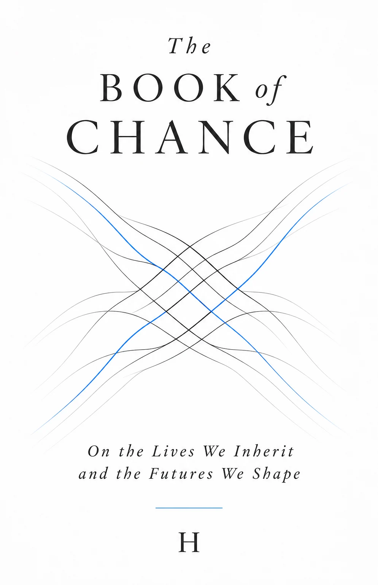

A quieter way to read
Reading room
Choose a book from the Library, or begin with the foundational book.
Preparing pages…Stored only on this device
Page 1 of 1
This reader could not start. You can still use the Library to read online or download a book.